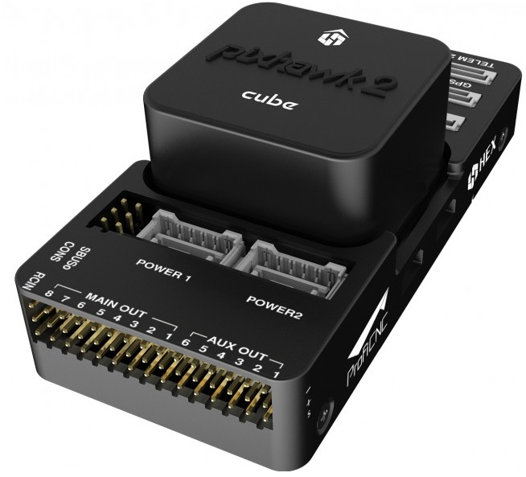
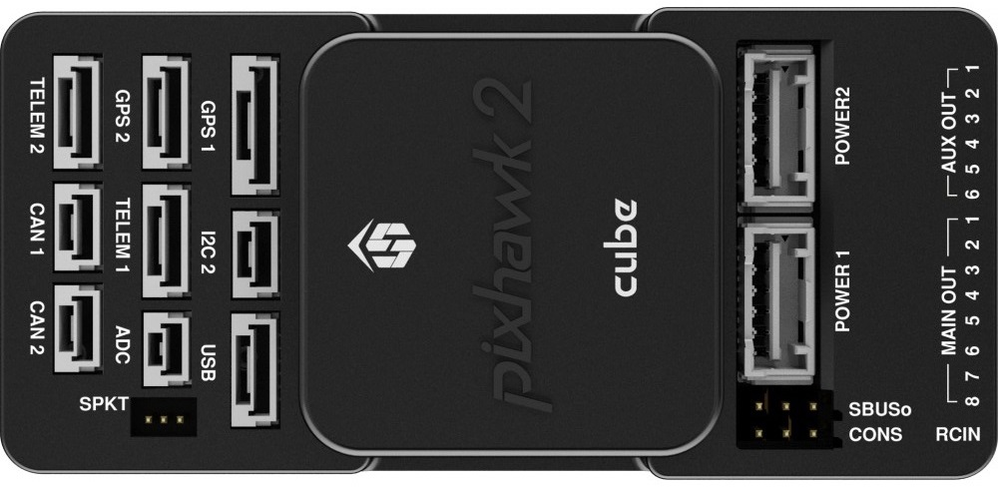

The Cube Black¶
{kind=link}
System Features¶
The Cube Black autopilot is a further evolution of the Pixhawk autopilot. It is designed for commercial systems and manufacturers who wish to fully integrate an autopilot into their system. On top of the existing features of Pixhawk, it has the following enhancements:
3 sets of IMU sensors for extra redundancy
2 sets of IMU are vibration-isolated mechanically, reducing the effect of frame vibration to state estimation
IMUs are temperature-controlled by onboard heating resistors, allowing optimum working temperature of IMUs
The entire flight management unit(FMU) and inertial management unit(IMU) are housed in a relatively small form factor (a cube). All inputs and outputs go through a 80-pin DF17 connector, allowing a plug-in solution for manufacturers of commercial systems. Manufacturers can design their own carrier boards to suite their specific needs.
Specifications¶
Processor
32-bit ARM Cortex M4 core with FPU
168 Mhz/256 KB RAM/2 MB Flash
32-bit failsafe co-processor
Sensors
Three redundant IMUs (accels, gyros and compass)
InvenSense MPU9250, ICM20948 and/or ICM20648 as first and third IMU (accel and gyro)
ST Micro L3GD20+LSM303D or InvenSense ICM2076xx as backup IMU (accel and gyro)
Two redundant MS5611 barometers
Power
Redundant power supply with automatic failover
Servo rail high-power (7 V) and high-current ready
All peripheral outputs over-current protected, all inputs ESD protected
Interfaces
14x PWM servo outputs (8 from IO, 6 from FMU)
S.Bus servo output
R/C inputs for CPPM, Spektrum / DSM and S.Bus
Analogue / PWM RSSI input
5x general purpose serial ports, 2 with full flow control
2x I2C ports
SPI port (un-buffered, for short cables only not recommended for use)
2x CAN Bus interface
3x Analogue inputs (3.3V and 6.6V)
High-powered piezo buzzer driver (on expansion board)
High-power RGB LED (I2C driver compatible connected externally only)
Safety switch / LED
Optional carrier board for Intel Edison
The Cube connector pin assignments¶
This section details the pin assignments of the standard carrier board of The Cube. There are other types of carrier boards available, please refer to the manufacturer pages for pinouts of specific carrier board.

TELEM1, TELEM2 ports
| Pin | Signal | Volt |
|---|---|---|
| 1 (red) | VCC | +5V |
| 2 (blk) | TX (OUT) | +3.3V |
| 3 (blk) | RX (IN) | +3.3V |
| 4 (blk) | CTS | +3.3V |
| 5 (blk) | RTS | +3.3V |
| 6 (blk) | GND | GND |
GPS1 port
| Pin | Signal | Volt |
|---|---|---|
| 1 (red) | VCC | +5V |
| 2 (blk) | TX (OUT) | +3.3V |
| 3 (blk) | RX (IN) | +3.3V |
| 4 (blk) | SCL I2C1 | +3.3V |
| 5 (blk) | SDA I2C1 | +3.3V |
| 6 (blk) | Button | GND |
| 7 (blk) | button LED | GND |
| 8 (blk) | GND | GND |
GPS2 port
| Pin | Signal | Volt |
|---|---|---|
| 1 (red) | VCC | +5V |
| 2 (blk) | TX (OUT) | +3.3V |
| 3 (blk) | RX (IN) | +3.3V |
| 4 (blk) | SCL I2C2 | +3.3V |
| 5 (blk) | SDA I2C2 | +3.3V |
| 6 (blk) | GND | GND |
ADC
| Pin | Signal | Volt |
|---|---|---|
| 1 (red) | VCC | +5V |
| 2 (blk) | ADC IN | |
| 3 (blk) | GND | GND |
I2C2
| Pin | Signal | Volt |
|---|---|---|
| 1 (red) | VCC | +5V |
| 2 (blk) | SCL | +3.3 (pullups) |
| 3 (blk) | SDA | +3.3 (pullups) |
| 4 (blk) | GND | GND |
CAN1&2
| Pin | Signal | Volt |
|---|---|---|
| 1 (red) | VCC | +5V |
| 2 (blk) | CAN_H | +12V |
| 3 (blk) | CAN_L | +12V |
| 4 (blk) | GND | GND |
POWER1
| Pin | Signal | Volt |
|---|---|---|
| 1 (red) | VCC | +5V |
| 2 (red) | VCC | +5V |
| 3 (blk) | CURRENT | up to +3.3V,pin 3 |
| 4 (blk) | VOLTAGE | up to +3.3V,pin 2 | 5 (blk) | GND | GND | 6 (blk) | GND | GND |
POWER2
| Pin | Signal | Volt |
|---|---|---|
| 1 (red) | VCC | +5V |
| 2 (red) | VCC | +5V |
| 3 (blk) | CURRENT | up to +3.3V,pin 14 |
| 4 (blk) | VOLTAGE | up to +3.3V,pin 13 | 5 (blk) | GND | GND | 6 (blk) | GND | GND |
USB
| Pin | Signal | Volt |
|---|---|---|
| 1 (red) | VCC | +5V |
| 2 (blk) | D_plus | +3.3V |
| 3 (blk) | D_minus | +3.3V |
| 4 (blk) | GND | GND |
| 5 (blk) | BUZZER | battery voltage |
| 6 (blk) | Boot/Error LED |
RSSI Input
Analog/PWM RSSI Input is pin 103
Cubepilot Ecosystem¶

More Information¶
For more information and instructions on setting up and using the Cubepilot system see Cubepilot Docs
For technical help and support on the cubepilot system see Cubepilot Forum
Company information on Cubpilot can be found at www.proficnc.com
Carrier Board Design¶
The reference design files of the standard carrier board are available in github, or here ,this serve as a starting point for designers to design their own system based on The Cube autopilot.
Where to Buy¶
Official retailers are listed here.
More Images¶
{kind=link}
[copywiki destination=”plane,copter,rover,blimp”]